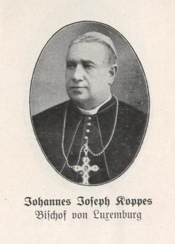
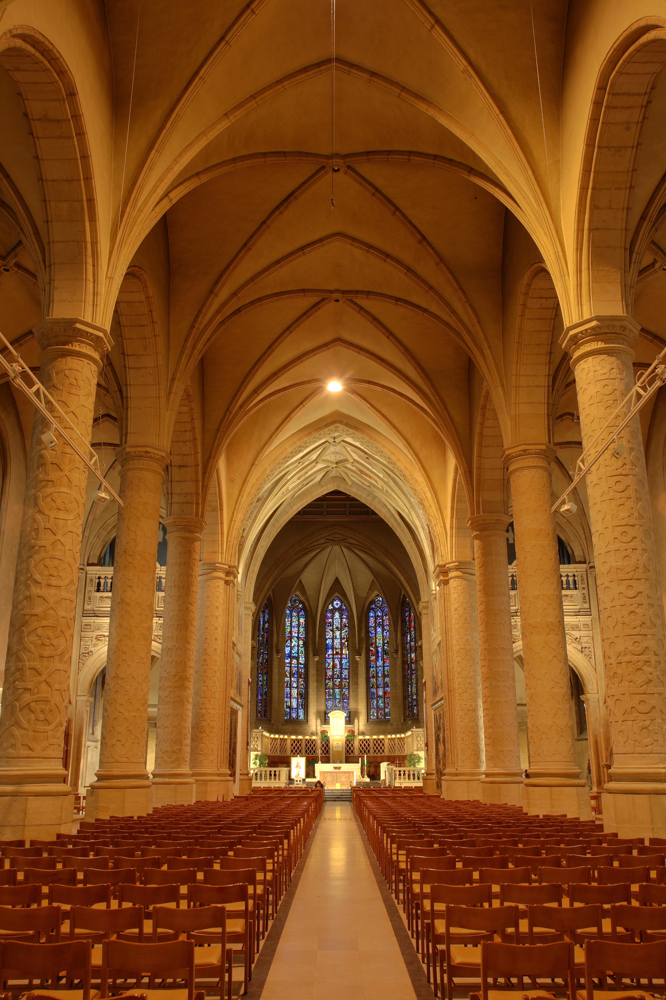
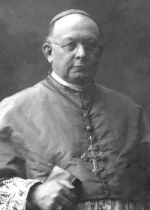

Keuskupan Agung Luksemburg adalah sebuah keuskupan agung Ritus Latin Gereja Katolik di Keharyapatihan Luxembourg, yang meliputi seluruh Keharyapatihan tersebut. Keuskupan tersebut didirikan pada 1870, dan menjadi keuskupan agung pada 1988.
Nicolas Adames (1870 - 1883)
Nicolas Adames adalah uskup pertama Luksemburg.
Johannes Joseph Koppes (1883 - 1918)
Jean Joseph Alphonse Koppes menjabat sebagai Uskup Luksemburg dari tahun 1883 hingga 1918.
Sede Vacante
Sede vacante atau disebut juga takhta lowong merupakan istilah yang merujuk pada keadaan takhta episkopal suatu keuskupan yang lowong karena tidak adanya uskup yang menempati. Menurut hukum kanonik dalam Gereja Katolik, istilah ini merujuk pada kekosongan kekuasaan uskup dan Paus, setelah pemegang jabatan tersebut mangkat atau melepaskan jabatan.
Pierre Nommesch (1920 - 1935)
Pierre Nommesch menjabat sebagai Uskup Luksemburg dari tahun 1920 hingga 1935.